Людина, з якої все почалося
Роланд Байрозян
У 2001 році Роланд захопився BMX – трюковим велосипедом. За кілька років таких, як він, у Миколаєві стало багато, і з’явилося просте питання: хто домовлятиметься з містом про скейт-парк? У травні 2004 року Роланд разом із друзями зареєстрував громадську організацію «Альтер-Спорт» і став її головою.
Відтоді він – той, хто пише заявки на гранти, ходить по кабінетах, виводить сотні велосипедистів на вулиці й прибирає скейт-парк разом із волонтерами. Про нього кажуть: «Не скромничай, люди мають знати своїх героїв в обличчя».
„Найбільша нестача відчувається завжди у справжніх лідерах та коштах.“
— Роланд Байрозян, 2013
„Починалося все з 15–20 людей. А тепер буває, що збирається понад 1200 учасників – рух росте й розвивається.“
— Роланд Байрозян, 2019
„Справа не в кількості учасників, а в тому, що щороку серед них щонайменше 80–100 новачків.“
— Роланд Байрозян, 2019
«Альтер-Спорт» у цифрах
Історія
Народження
BMX, скейти, ролики – у Миколаєві росте покоління екстремалів. У травні 2004 року вони отримують голос: громадську організацію «Альтер-Спорт».
Перший Велодень
Починається традиція, що стане наймасовішою велоакцією міста. Того ж року вперше проходить крос-кантрі «Гонка Перемоги» в парку Перемоги.
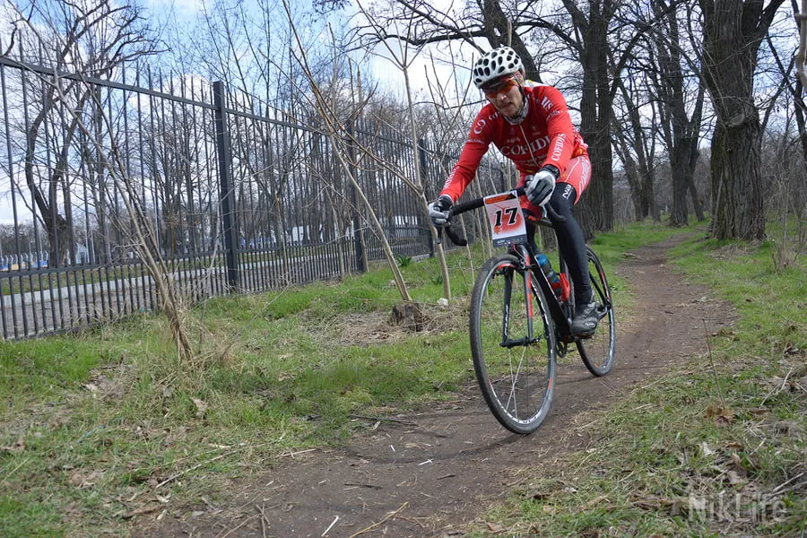
Перший скейт-парк міста
Перемога в конкурсах «Територія РУСАЛу» та «Серце міста» – і 22 вересня в парку Перемоги відкривається перший скейт-парк Миколаєва з безкоштовними секціями BMX, роликів, скейтбордингу, тріалу й флетленду.
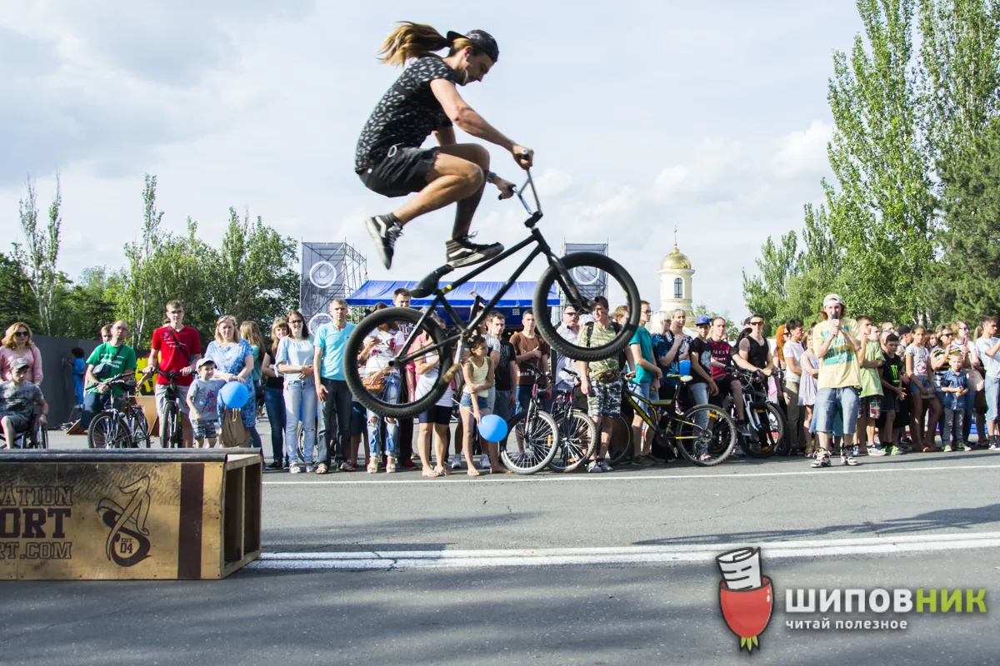
Кіно під відкритим небом
Разом із кіноклубом RealityShiftCinema – щорічний Манхеттенський фестиваль короткометражок і «Відкрита ніч» у Миколаєві.
Парк спорту «Корабельний»
Другий грант РУСАЛу – 300 тисяч гривень. За 30–40 днів біля басейну «Водолій» виростає спортмістечко зі скейт-парком і воркаутом. Капсулу з посланням «Миколаєву майбутнього» закладає активіст організації В’ячеслав Балабаєв (BVB). 4 листопада – урочисте відкриття.
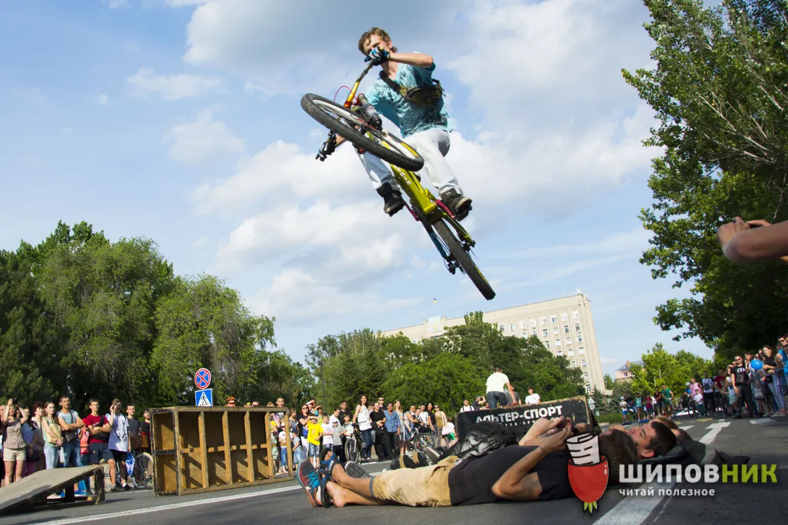
Велосипед – це транспорт
Велодорожки, велопарковки, перша шкільна велостоянка, велоконцепція міста. Велодень 2014-го – 600 учасників, 2017-го – понад тисячу.
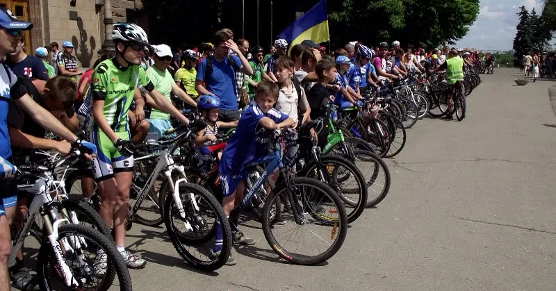
Шоу, змагання, свята
Екстрим-шоу та змагання у скейт-парку, показові виступи на чемпіонаті України з велоспорту, на святах для дітей і акціях здоров’я; проєкт «Літній сезон у скейт-парку».
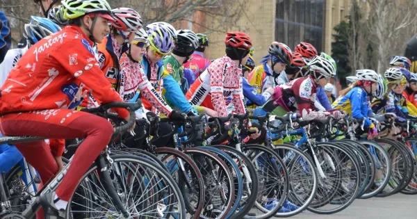
Місто, зручне для людей
Разом з Агенцією розвитку Миколаєва – тиждень міського розвитку Mykolaiv Urban Days і велопарад до Дня міста: близько тисячі велосипедистів.
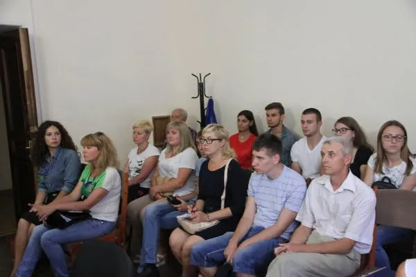
Велофорум у Миколаєві
Головна велоподія України приїжджає до Миколаєва: понад 100 учасників із 8 країн Європи. «Альтер-Спорт» – співорганізатор.
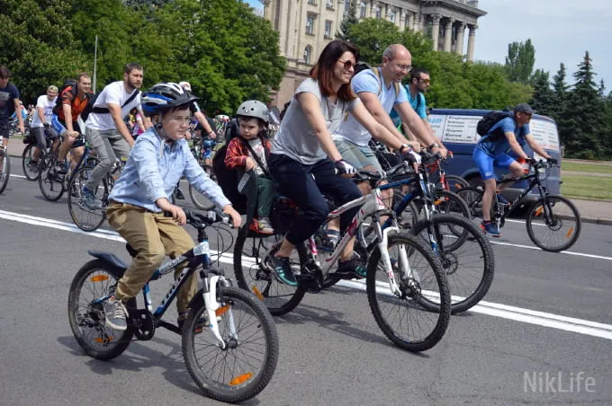
Ми тут, щоб творити
Велодень збирає сотні людей, серед них щороку десятки новачків. А на пустирі біля спортшколи «Надія» Роланд починає новий скейт-парк – з великим графіті «Мы здесь, чтобы творить».
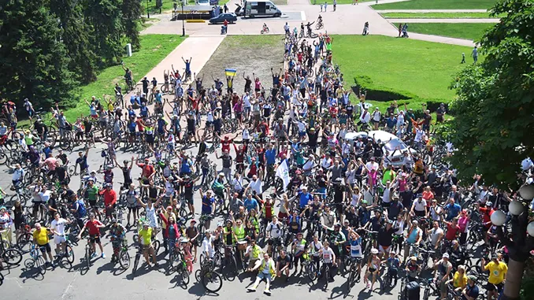
Як це виглядає
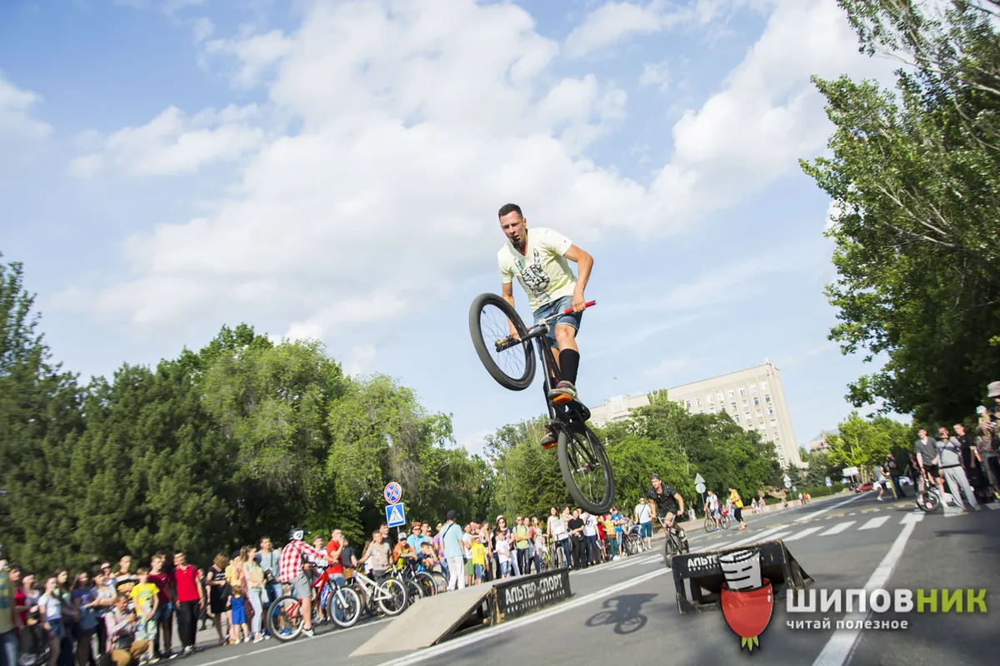
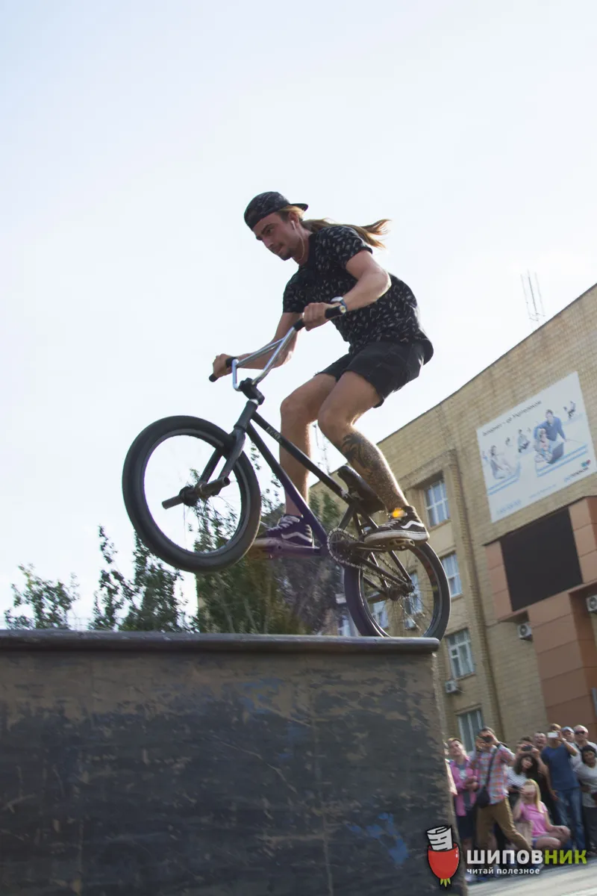
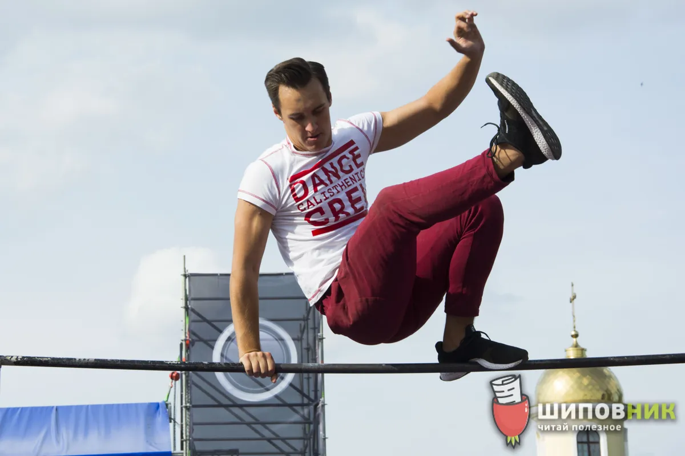
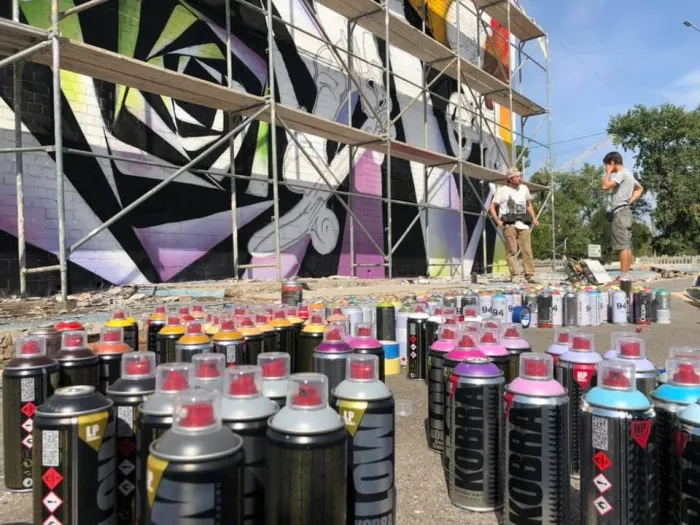
Фото з публікацій миколаївських медіа (Шипшина, NikLife, «Вечірній Миколаїв», Свідок, НікВісті).
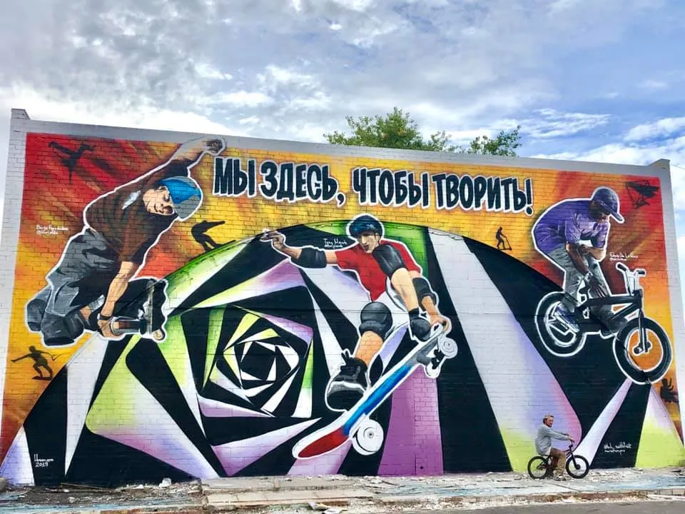
Замість епілогу
Ми тут, щоб творити.
Скейт-парки виростали на пустирях. Велодень почався з п’ятнадцяти людей. Усе, що зробив «Альтер-Спорт», колись здавалося неможливим – доки хтось не взявся.
Тож тримаймо оптимізм. Сідаймо на велосипед, виходьмо на майданчик, підтримуймо одне одного й новачків. Добра енергія, як і швидкість, накопичується в русі. Миколаїв – місто на хвилі, і ця хвиля ще попереду.